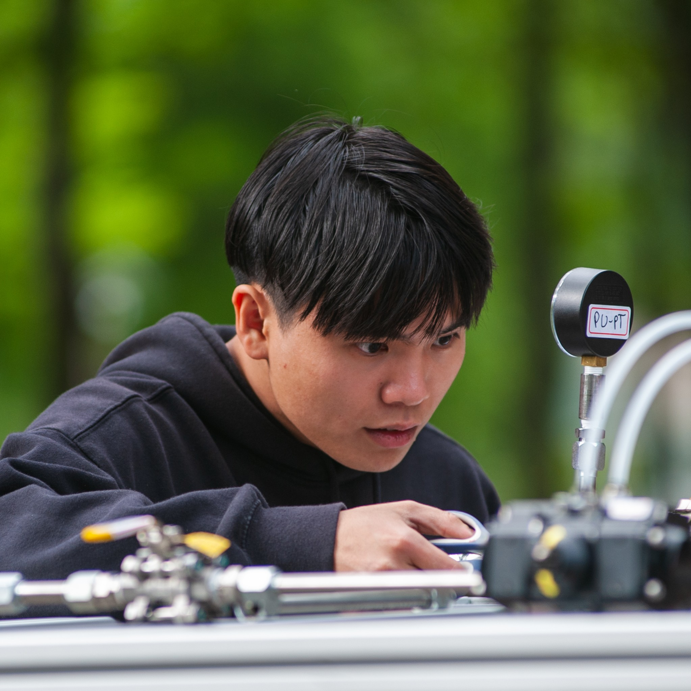
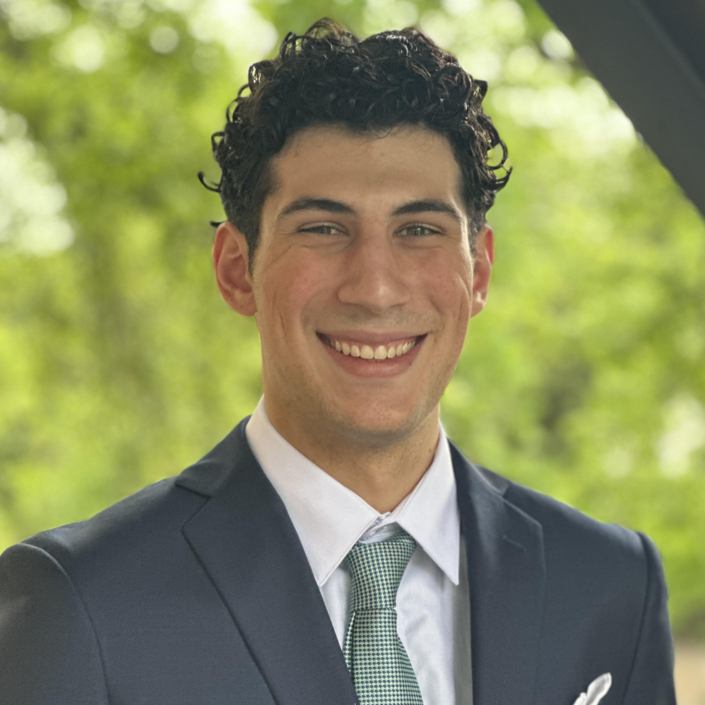
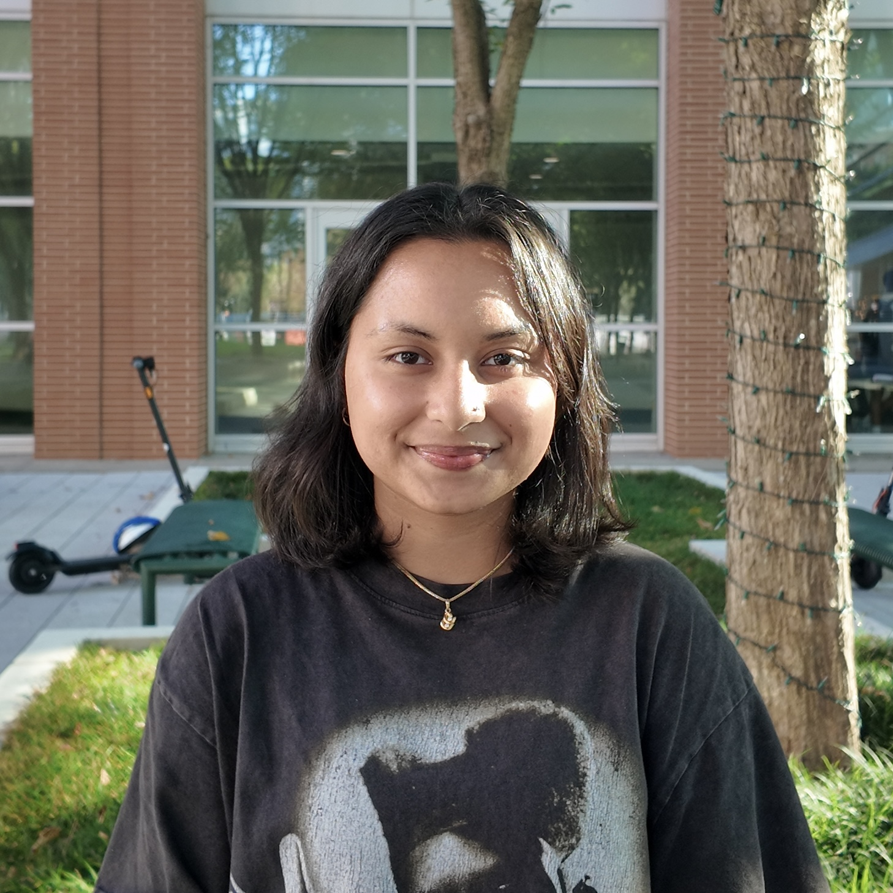
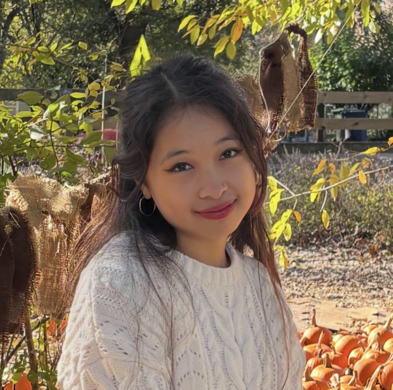

About Us
We’re Propulsive Landers @ Georgia Tech with the mission to become the first student team in the world to achieve vertical take-off and landing of a hybrid rocket.
Our Leadership Team

Baldwin Chen
Founder & Project Lead
Baldwin is a 2nd-year aerospace engineering major from Tainan, Taiwan. As the Project Lead, he oversees the entire operation from managing subteams to sorting logistics. He is part of the Taiwanese Advanced Rocket Research Center (ARRC) and previously interned at the Taiwan Space Agency (TASA). Outside of the club, he enjoys playing volleyball and bowling.

Anyi Lin
Guidance, Navigation, and Controls Lead
Anyi is a 2nd-year computer science major from Athens, Georgia. He serves as the GNC lead, managing the design and implementation of algorithms involving sensor fusion and navigation of the UAV. Beyond the club, Anyi enjoys spending time with friends and working out.

Jack Rumpf
Structures Lead
Jack is a 2nd-year mechanical engineering major with a minor in FinTech at Georgia Tech. He is from Athens, GA, and serves as the Structures Co-Lead. He manages the structural aspects of all projects. He has interned with ABB as a Mechanical/Design Engineer and currently is with Spark Starter Studio as a Web Developer. Outside of GTPL he likes to spend time hanging out with his friends.

Alexis Alfonseca
Structures Lead
Alexis is a 2nd-year mechanical engineering major from Duluth, Georgia. As the Structures Co-Lead, he oversees the development of essential structural elements on all of the projects. He previously interned at Siemens and has experience in 3D printing and injection molding. Outside of GTPL, he spends his time playing ultimate frisbee and raising livestock.

Michael Swoyer
Propulsion Lead
Michael is a 3rd-year aerospace engineering major from San Antonio, Texas (Go Spurs). As Propulsion lead, Michael coordinates tests, oversees the design of the engine and feed system, and engages team members. Michael loves asking questions and helping people answer theirs, and when not working on GTPL he enjoys playing basketball and eating cheeseburgers.
Herris Fentress
Finance & Operations Lead
Herris is a 1st-year aerospace engineering major from Sandy Springs. As the Administrative Lead, he oversees the day-to-day operations, finances, and logistics for Propulsive Landers. In his free time, he likes making music, playing video games, and hanging out with friends.

Suhaila Rashid
Avionics Lead
Suhaila is a second-year electrical engineering major from Augusta, Georgia. As one of the Avionics leads, she oversees hardware integration and testing, PCB design, and Human Resources. Outside of GTPL, she enjoys quilting and hanging out with her car Germ.

Udita Mahajan
Avionics Lead
Udita is a 2nd-year electrical engineering major from Santa Clara, California. As one of the Electronics leads, she helps oversee the design and operation of hardware components. She has previously been a Lab Teaching Assistant at 49ers STEM Leadership Institute. Outside of GTPL, she enjoys hiking and playing tennis and basketball.
Vice Leads

Matthew Xu
Engine Development Lead
Matthew is a 2nd-year aerospace engineering major from Upton, Massachusetts at Georgia Tech. He is a co-lead for the engine development team and helps lead the progression of testbed engines and main engine design. Outside of GTPL, he is a part of the sailing race team at Georgia Tech, loves to workout, and loves to run.

Sukhmani Sethi
Engine Development Lead
Sukhmani is a 2nd-year aerospace engineering major from Aldie, Virginia. She serves as the engine development vice lead, overseeing the development of the injector and the engine. Outside of the club, she enjoys sleeping, playing basketball, and netflix.

Mia Carlton
Social Media Lead
Mia is a 2nd-year chemical & biomolecular engineering major from Atlanta, Georgia. She manages GTPL's social medias: designing, editing, and captioning posts across multiple platforms. When not behind the camera, she loves running over curbs and beating anyi at the linkedin mini games.

Yoyi Xie
Simulations Lead
Yoyi is a 2nd-year mechanical engineering major from Athens, Georgia. He serves as a structures Vice-Lead. He has experience in robotics, mechanical design, programming, and developing startups. Outside of GTPL, he enjoys spending time with friends and working on personal projects.
Past Leads

Matthew Lai
Marketing Lead
Matthew was the Marketing Lead for Propulsive Landers in Spring 2024 and is currently a Data Engineering intern at Cisco.

Mihir Dasgupta
Avionics Lead
Mihir was the Avionics Lead for Propulsive Landers from Fall '24 - Spring '24, and was a Product Engineering Intern at Analog Devices.

Hanming Sun
Finance & Operations Lead
Hanming was the Finance & Operations Lead for Propulsive Landers from Fall '24 - Fall '25. He previously interned at Amazon as an Operations Intern and now heading to Tesla for in Spring of 25' as a Supply Chain Intern.